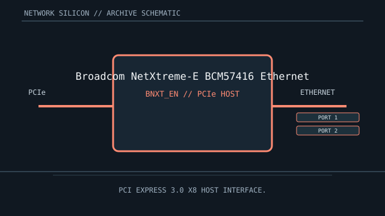

[ MODEL-SPECIFIC NETWORK HARDWARE ]
Broadcom NetXtreme-E BCM57416 Ethernet Controller
Dual-port 10GbE server controller silicon for PCIe adapter and embedded network designs. This is a controller/chip record; finished-card details are implementation-specific.

IDENTIFICATION: Match complete component top-mark, stepping and board revision. Nominal signaling rates are not measurements of application throughput.
Exact specifications and compatibility
| Dedicated subcategory | Ethernet controllers and PHYs |
|---|---|
| Exact controller identity | Broadcom NetXtreme-E BCM57416 Ethernet Controller |
| Component / board identity | NetXtreme-E dual-port Ethernet controller; board determines copper/optical PHY components and external connectors. |
| PCIe bus and host interface | PCI Express 3.0 x8 host interface. |
| Ethernet ports / physical interface | Two 10GBASE-T copper Ethernet ports in the documented BCM57416 implementation; the NIC board supplies the RJ-45 connectors and magnetics. |
| Nominal rate (not measured) | Up to 10 Gb/s nominal per port (20 Gb/s aggregate line rate); not measured throughput. |
| Drivers and OS compatibility | Linux bnxt_en driver supports Broadcom NetXtreme-E devices; Broadcom/OEM packages cover selected Windows Server releases. Firmware, adapter subsystem IDs and OEM support matrix must match. |
| Board / system compatibility | Requires a BCM57416-based board with PCIe Gen3 x8 host wiring, appropriate airflow and 10GBASE-T-rated cabling. The Lenovo adapter guide lists the 7ZT7A00496 PCIe board as a distinct assembly; verify the exact OEM firmware and cable-length specification. |
| Revision and variant warning | BCM57416 identifies controller silicon, not a specific card. A documented exact board implementation is Lenovo ThinkSystem Broadcom 57416 10GBASE-T 2-Port PCIe Adapter, part 7ZT7A00496. Similar BCM5741x-family devices may differ in media and features. |
| Measured throughput | No measured benchmark is claimed for a physical specimen. A valid result records the host, link partner, medium, driver/firmware, traffic pattern, test tool and duration. |
Identification and revision notes
BCM57416 identifies controller silicon, not a specific card. A documented exact board implementation is Lenovo ThinkSystem Broadcom 57416 10GBASE-T 2-Port PCIe Adapter, part 7ZT7A00496. Similar BCM5741x-family devices may differ in media and features.
Linux bnxt_en driver supports Broadcom NetXtreme-E devices; Broadcom/OEM packages cover selected Windows Server releases. Firmware, adapter subsystem IDs and OEM support matrix must match.
Requires a BCM57416-based board with PCIe Gen3 x8 host wiring, appropriate airflow and 10GBASE-T-rated cabling. The Lenovo adapter guide lists the 7ZT7A00496 PCIe board as a distinct assembly; verify the exact OEM firmware and cable-length specification.
Archival and preservation notes
Record the controller and board markings, port transceiver type, NVM/firmware and OEM subsystem ID. Preserve heatsink, airflow clearance and any original optic for reliable identification.
For an installed specimen, preserve source URL, access date, source revision and label/condition notes. Do not infer connector count or board-level compatibility from controller family name alone.
Manufacturer and driver sources
- Lenovo ThinkSystem Broadcom 57416 adapter guideLenovo Press model-specific technical guide for ThinkSystem Broadcom 57416 10GBASE-T PCIe adapters, including part 7ZT7A00496.
- Linux kernel bnxt_en driver sourceLinux bnxt_en driver implementation for NetXtreme-E controllers and adapters.
Sources cover the named controller family and its relevant driver ecosystem. The exact board vendor’s compatibility list takes precedence for a finished adapter or motherboard implementation.